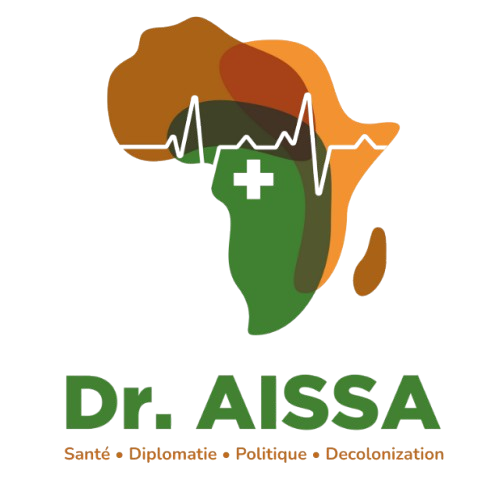

« Le pont entre l'Afrique et le reste du monde. »
« Die Brücke zwischen Afrika und dem Rest der Welt. »
"The bridge between Africa and the rest of the world."
Le cabinet de conseil Dr. Aissa propose un accompagnement de haut niveau aux gouvernements, institutions internationales, entreprises et ONG dans les domaines de la politique, de la diplomatie, de la décolonisation et de la santé publique.
Notre mission est de servir de pont entre l'Afrique et le reste du monde à travers des relations fructueuses et un état d'esprit décolonisé.
Nous concevons des programmes et des projets, et nous accompagnons leur mise en œuvre, leur suivi et leur évaluation. Nous proposons également des séminaires, des consultations ainsi que des partenariats dans nos domaines d'expertise.
Avec une présence en Allemagne et au Niger, le cabinet Dr. Aissa offre une perspective bicontinentale unique, permettant de concevoir des stratégies adaptées aux réalités locales tout en répondant aux standards internationaux. Chaque mission est conçue sur mesure, avec un engagement total pour des résultats concrets, durables et mesurables.
Die Unternehmensberatung Dr. Aissa bietet hochrangige Begleitung für Regierungen, internationale Institutionen, Unternehmen und NGOs in den Bereichen Politik, Diplomatie, Dekolonisierung und öffentliche Gesundheit.
Unsere Mission ist es, als Brücke zwischen Afrika und dem Rest der Welt zu dienen, durch fruchtbare Beziehungen und eine dekolonisierte Denkweise.
Wir entwickeln Programme und Projekte und begleiten deren Umsetzung, Überwachung und Evaluierung. Wir bieten auch Seminare, Beratungen sowie Partnerschaften in unseren Fachbereichen an.
Mit Standorten in Deutschland und Niger bietet die Dr. Aissa-Beratung eine einzigartige bikontinentale Perspektive, die es ermöglicht, Strategien zu entwickeln, die an die lokalen Gegebenheiten angepasst sind und gleichzeitig internationalen Standards entsprechen. Jeder Auftrag ist maßgeschneidert, mit vollem Engagement für konkrete, nachhaltige und messbare Ergebnisse.
Dr. Aissa Consulting provides high-level support to governments, international institutions, corporations and NGOs in the areas of politics, diplomacy, decolonization and public health.
Our mission is to serve as a bridge between Africa and the rest of the world through fruitful relationships and a decolonized mindset.
We design programs and projects, and support their implementation, monitoring and evaluation. We also offer seminars, consultations and partnerships in our areas of expertise.
With a presence in Germany and Niger, Dr. Aissa Consulting offers a unique bi-continental perspective, enabling the design of strategies adapted to local realities while meeting international standards. Each mission is tailored, with full commitment to concrete, sustainable and measurable results.
